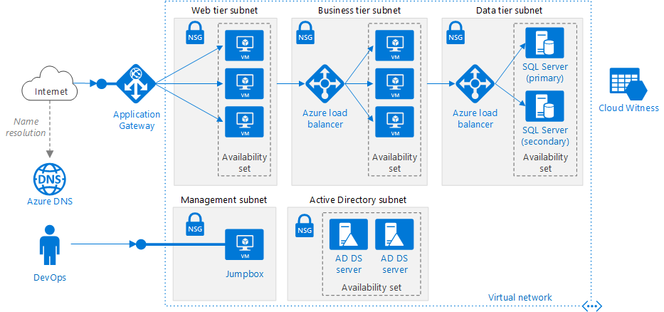
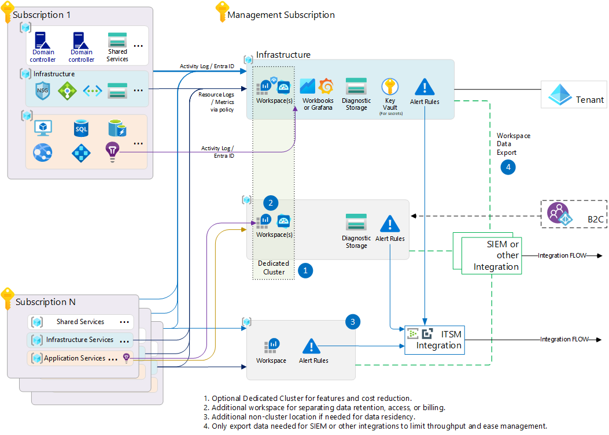
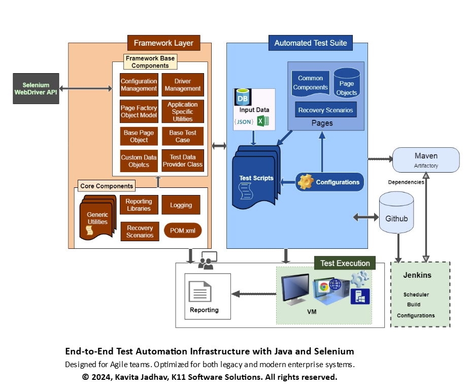

Azure-certified IT professional with hands-on experience in cloud infrastructure, troubleshooting, and software testing. Currently building expertise in Azure administration, monitoring, networking, and secure infrastructure deployment.
Microsoft Azure Fundamentals (AZ-900)
Cloud Infrastructure & Azure Administration
Testing, Troubleshooting, SLA-driven Operations
Open to roles across Germany
I am an Azure-certified IT professional with experience in system support, software testing, and operational troubleshooting. My background includes working in SLA-driven environments, supporting validation processes, improving workflows, and contributing to reliable system performance.
I am currently strengthening my cloud administration skills through hands-on Azure projects involving Virtual Machines, Virtual Networks, Network Security Groups, RBAC, Azure Monitor, and Azure Backup. I am seeking opportunities in Azure Administration, Cloud Support, IT Operations, and Infrastructure roles in Germany.

Designed and deployed a secure Azure environment using Virtual Machines, Virtual Networks, subnets, and Network Security Groups. Implemented RBAC for secure access control and resource governance.

Configured Azure Monitor to track availability, health, and performance. Implemented backup and recovery processes to support operational continuity and data protection.

Developed reusable Selenium automation scripts for functional and regression testing, improving testing efficiency and reducing manual effort across validation workflows.
Microsoft Azure Fundamentals (AZ-900)
Microsoft Azure Administrator (AZ-104) — In Progress
M.Sc. IT Management
Berlin School of Business and Innovation
B.E. Computer Science and Engineering
Anna University
English (B2)
German (A2)
Tamil (Native)
Malayalam (Conversational)
Hindi (Basic)
Work Authorization: Eligible to work in Germany until August 2026.
Email: aarthishreechandiran@gmail.com
Phone: +49 176 74199920
LinkedIn: linkedin.com/in/aarthi-shree-chandiran
GitHub: github.com/aarthi-shree-chandiran
Portfolio: aarthi-shree-chandiran.github.io